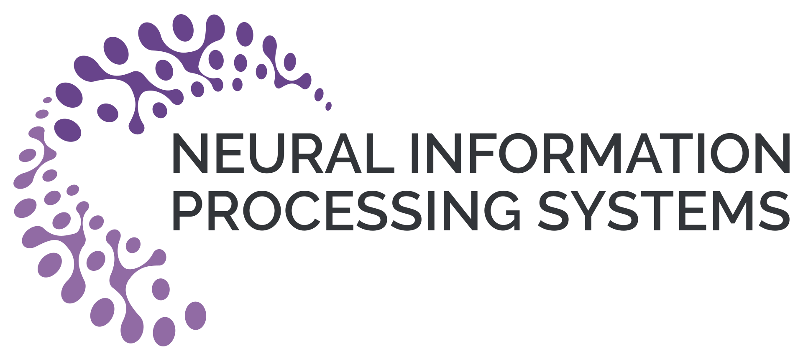
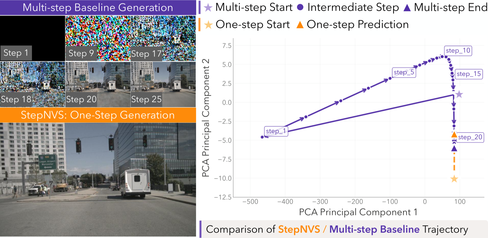
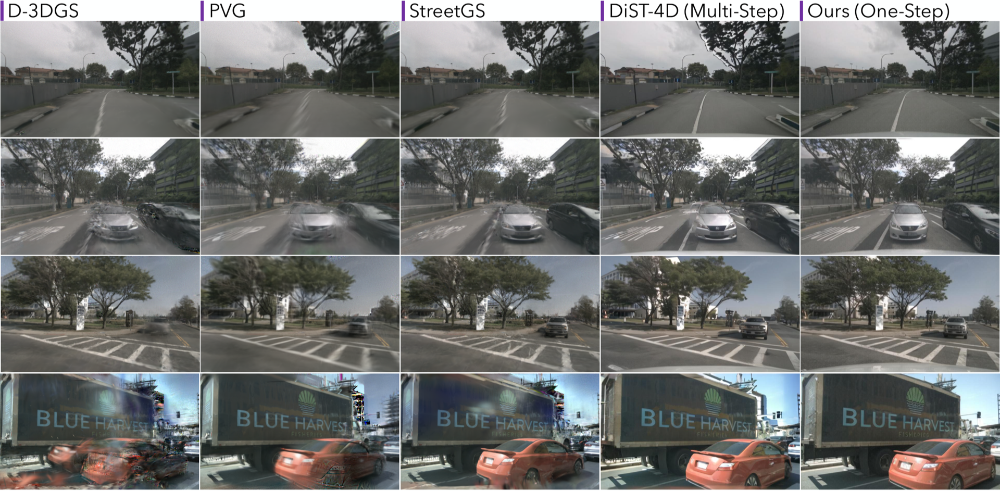
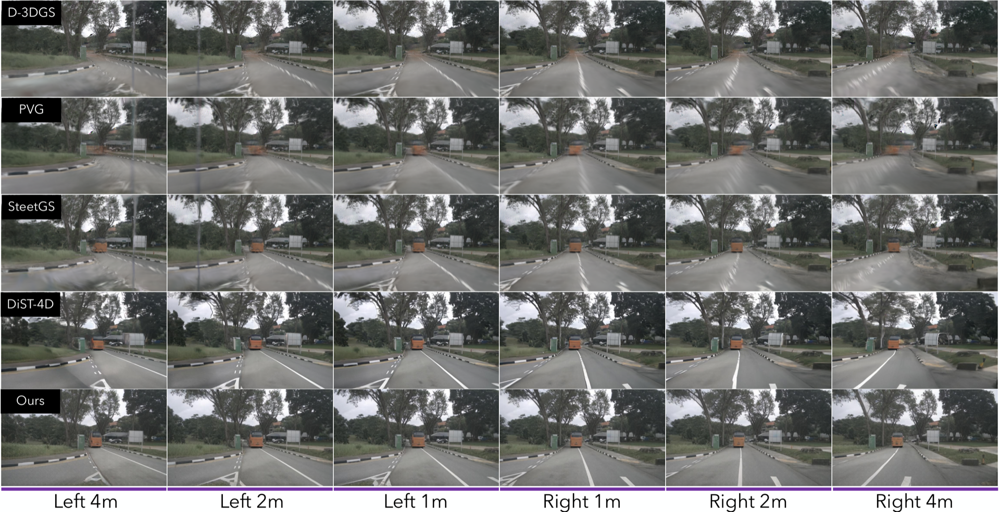

We synthesize novel views by applying lateral shifts along the Y-axis. From left to right, the views transition smoothly from -2m and -1m left shifts, through the Ground Truth (Center), to +1m and +2m right shifts.
We generate consistent 6-camera surround-view sequences across various lateral shifts, maintaining temporal stability and visual coherence.
StepNVS also allow for diverse control over forward/backward (X-axis) and vertical (Z-axis) camera movements. From left to right, we show the Original Trajectory, Backward 1m, Forward 1m, Down 1m, and Up 1m.
We simulate complex driving behaviors, such as consecutive lane changes and slalom maneuvers, demonstrating that StepNVS maintains temporal consistency and spatial accuracy across arbitrary, long-range trajectories.
We create "bullet-time" rendering effects by seamlessly altering the viewpoint while maintaining a fixed timestamp.

